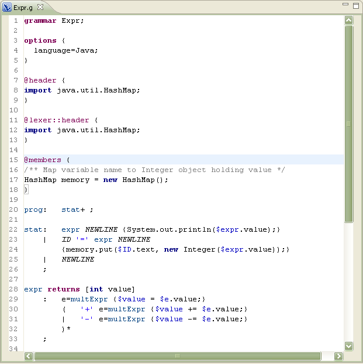
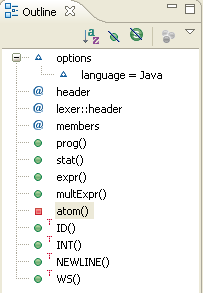
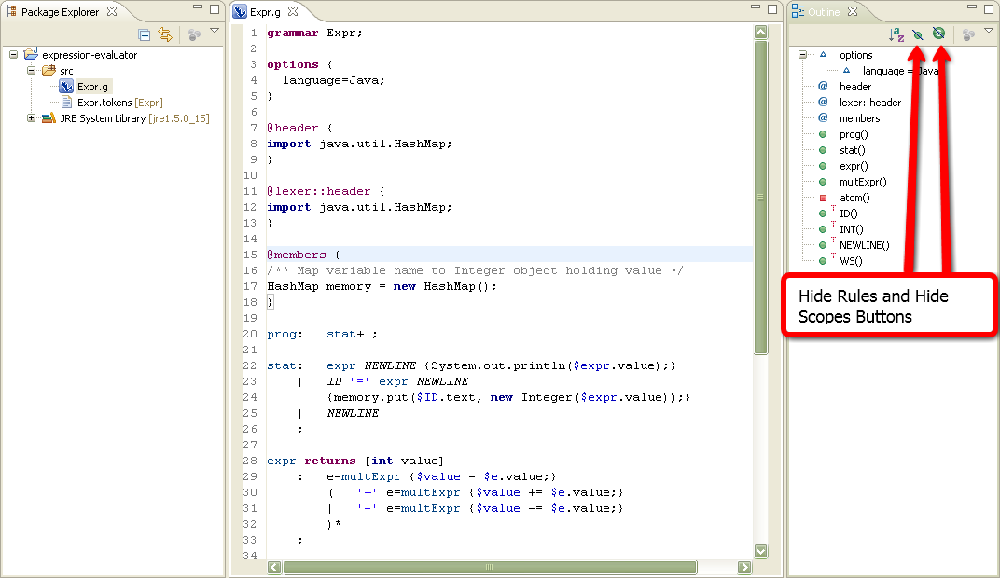
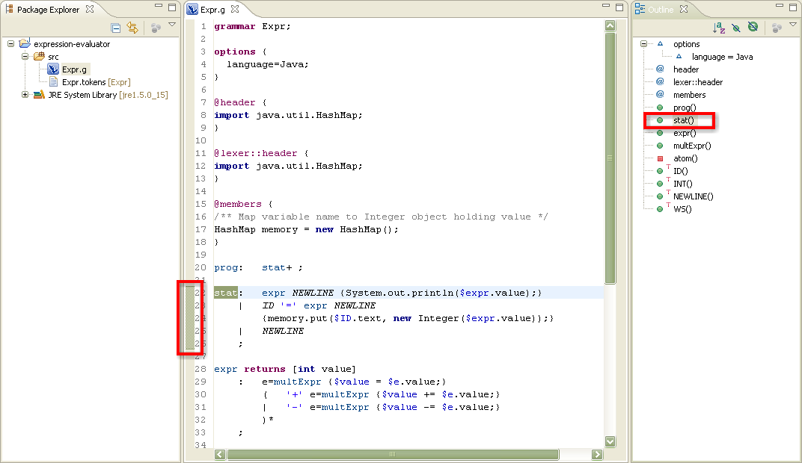

Opening an ANTLR editor
In this section, you will learn how to open an editor for ANTLR
files. You will also learn about some of the basic ANTLR editor
features.
- Locate the Expr.g in the Package Exlporer
view or Navigator view.
- Double click in Expr.g file to open it with the ANTLR editor
- Note the syntax highlighting. Different kinds of elements in
the ANTLR grammar are rendered in unique colors. For example:
- Regular comments
- Document comments
- Keywords
- Strings
- Rule
- TOKENS
- For target languages:

- Look at the Outline view. It display an
outline of the ANTLR file including: options declaration, tokens
declaration, directives declaration, rules, rules actions and lexer
rules. The Outline view use icons to annotate ANTLR
elements.

- Toggle the Hide Rules and Hide
Scopes buttons in the Outline view toolbar filter the view's display.

- In the Outline view, select different elements and note that
they are again displayed in a whole file view in the editor. The
Outline view selection now contains a range indicator on the vertical
ruler on the left border of the ANTLR editor that indicates the range of
the selected element.
